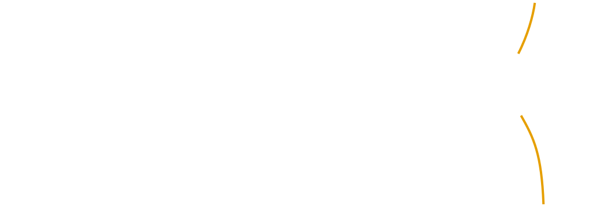
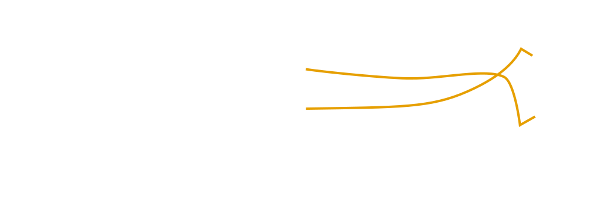
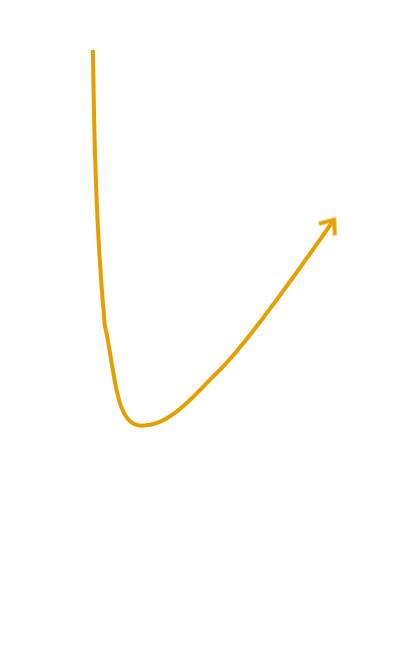
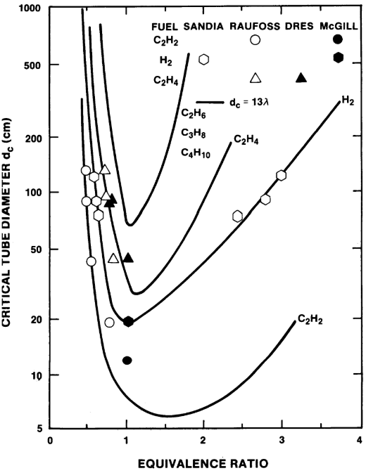
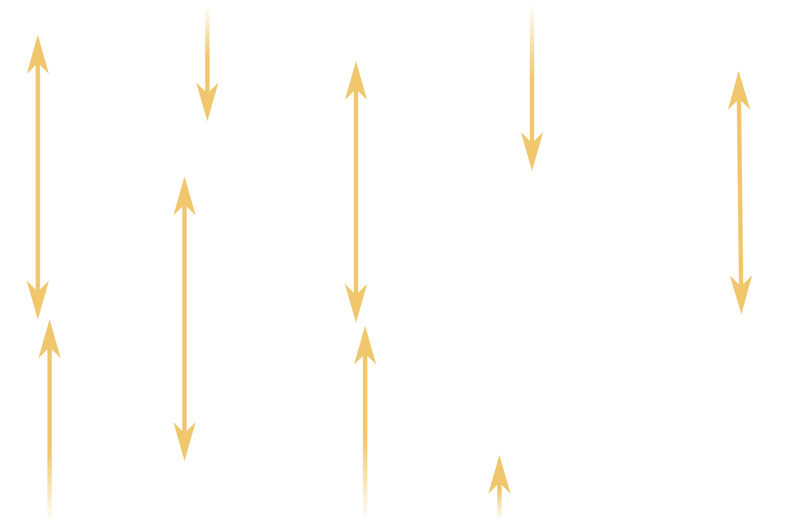
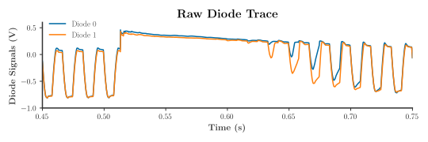
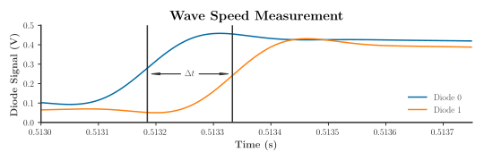

Motivation


Motivation
Pulse Detonation Engines (PDE)

Detonations
Anatomy of a Detonation






Detonations
Effects of Mixture Chemistry on Cell Size



Source: J. H. S. Lee, “Dynamic Parameters of Gaseous Detonations,” Annual Review of Fluid Mechanics, vol. 16, no. 1, pp. 311–336, 1984.
Detonations
Effects of Initial Pressure on Cell Size
Source: H. D. Ng, Y. Ju, and J. H. S. Lee, “Assessment of detonation hazards in high-pressure hydrogen storage from chemical sensitivity analysis,” Int. J. Hydrogen Energy, vol. 32, no. 1, pp. 93–99, 2007
Detonations
EFfects of Initial Temperature on Cell Size
Source: D. Stamps, W. Benedick, and S. Tieszen, “Hydrogen–air–diluent detonation study for nuclear reactor safety analyses,” Sandia National Laboratories, Albuquerque, NM, Tech. Rep. NUREG/CR-5525, January 1991.
Detonations
Effects of Tube Geometry on Cell Size

Source: C. M. Guirao, R,. Knystautas, J. H. Lee, “A Summary of Hydrogen-Air Detonation Experiments,” Sandia National Laboratories, Albuquerque, NM, Tech. Rep. NUREG/CR-4961, May 1989.
Measurement
Detonation Cell Size: Soot Foil Method

Source: J. H. S. Lee, The Detonation Phenomenon. Cambridge University Press, 2008.
Measurement
Detonation Cell Size: Schlieren Method
Source: M. I. Radulescu, G. J. Sharpe, C. K. Law, and J. H. S. Lee, “The hydrodynamic structure of unstable cellular detonations,” J. Fluid Mech., vol. 580, no. 2007, p. 31, 2007.
Methods
Speed Measurement


Methods
Chemical Sensitivity Analysis
Source: C. Fuller et al., “Effects of vitiation and pressure on laminar flame speeds of n-decane,” 50th AIAA Aerospace Sciences Meeting, January, 2012.